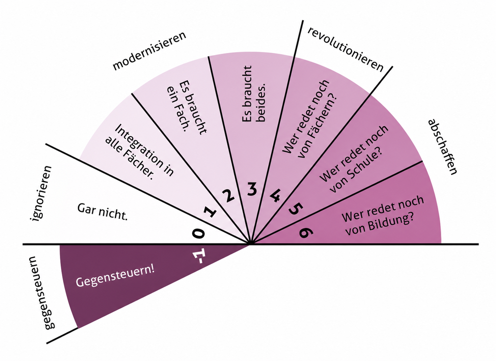
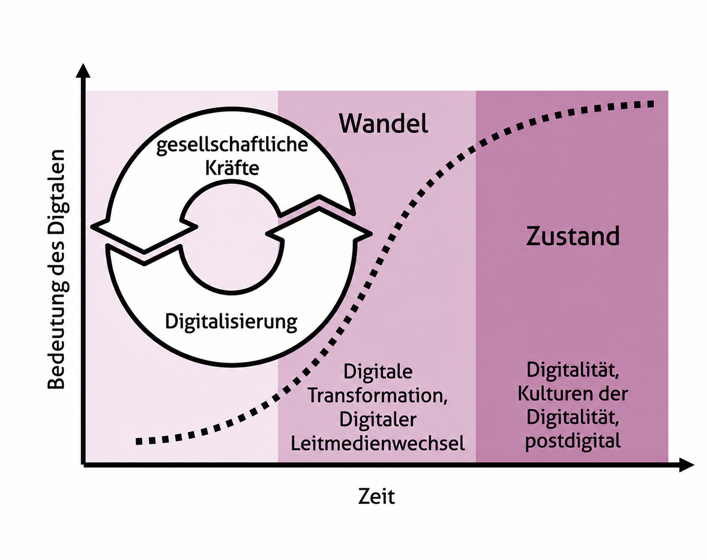
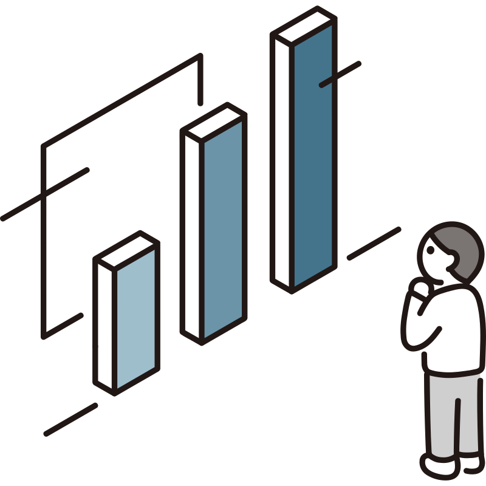
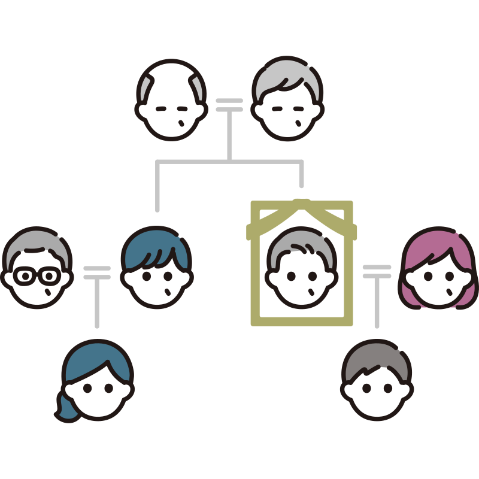
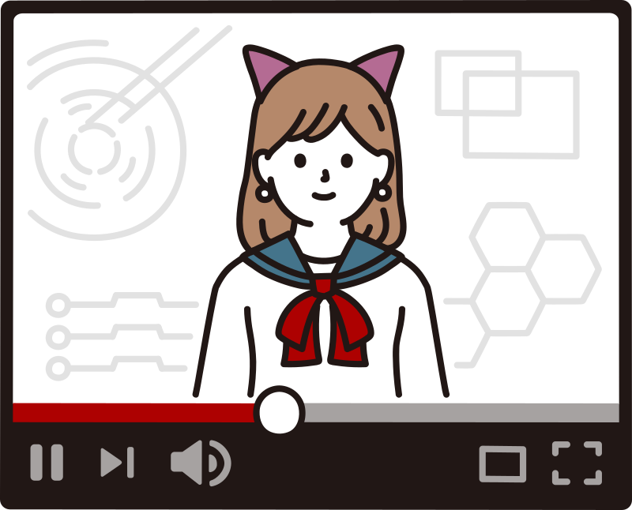

Transversaler Unterrichtsbereich


EDK (2024)

Filtern · Verarbeiten · Auswerten

Simulationen · Interaktiv

Identitätsbildung · Privatsphäre
Wissenserwerb · Partizipation
nachhaltige Entwicklung · Datensicherheit